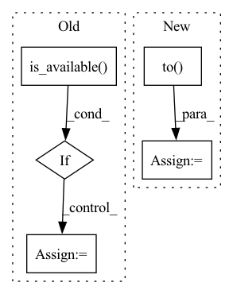

Pattern ID :28273

Before Change
x, edge_index, _ = self.process_graph(G, args)
if args.gpu >= 0 and torch.cuda.is_available():
device = "cuda:{}".format(args.gpu)
else:
device = "cpu"
After Change
x, edge_index, _ = self.process_graph(G, args)
x = x.to(self.device)
edge_index = edge_index.to(self.device)
x_ = self.model(x, edge_index)
outlier_scores = torch.mean(F.mse_loss(x_, x, reduction="none"), dim=1).detach().cpu().numpy()
return outlier_scores
In pattern: SUPERPATTERN
Frequency: 3
Non-data size: 5
Instances
Fragment ID: 83561259
Project Name: pygod-team/pygod
Commit Name: cd7f9640e182b1a92566435f7ca1c8018c6de040
Time: 2022-02-27
Author: kay.brick.leonard@gmail.com
File Name: pygod/models/gcnae.py
M Class Name: GCNAE
N Class Name: GCNAE
M Method Name: decision_function(3)
N Method Name: decision_function(3)
M Parent Class: BaseDetector
N Parent Class: BaseDetector
M File Name: pygod/models/gcnae.py
N File Name: pygod/models/gcnae.py
M Start Line: 97
M End Line: 102
N Start Line: 98
N End Line: 99
'>
Before Change
data_time.update(time.time() - end)
input = input.float()
if torch.cuda.is_available():
input = input.cuda()
target = target.cuda()
// ===================forward=====================
output = model(input)
After Change
input = input.float()
input = input.to(device)
target = target.to(device)
// ===================forward=====================
output = model(input)
loss = criterion(output, target)
'>
Fragment ID: 83561258
Project Name: alldbi/supermix
Commit Name: 0a995e52a44ba090780a3707c471683f125c7288
Time: 2020-01-02
Author: ali.dabouei@gmail.com
File Name: helper/loops.py
M Class Name: AnonimousClass
N Class Name: AnonimousClass
M Method Name: train_vanilla(7)
N Method Name: train_vanilla(6)
M Parent Class:
N Parent Class:
M File Name: helper/loops.py
N File Name: helper/loops.py
M Start Line: 25
M End Line: 48
N Start Line: 11
N End Line: 48
'>
Before Change
for idx, (input, target) in enumerate(val_loader):
input = input.float()
if torch.cuda.is_available():
input = input.cuda()
target = target.cuda()
// compute output
output = model(input)
After Change
input = input.float()
input = input.to(device)
target = target.to(device)
// compute output
output = model(input)
loss = criterion(output, target)
'>
Fragment ID: 83561263
Project Name: alldbi/supermix
Commit Name: 0a995e52a44ba090780a3707c471683f125c7288
Time: 2020-01-02
Author: ali.dabouei@gmail.com
File Name: helper/loops.py
M Class Name: AnonimousClass
N Class Name: AnonimousClass
M Method Name: validate(5)
N Method Name: validate(4)
M Parent Class:
N Parent Class:
M File Name: helper/loops.py
N File Name: helper/loops.py
M Start Line: 268
M End Line: 273
N Start Line: 274
N End Line: 290